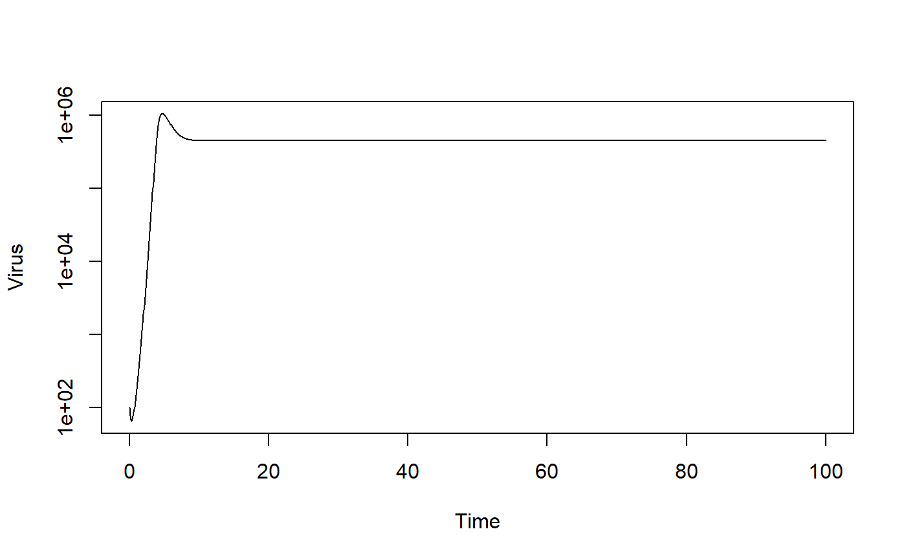

R/simulate_virusandtx_ode.R
simulate_virusandtx_ode.RdThis function runs a simulation of a compartment model using a set of ordinary differential equations. The model describes a simple viral infection system in the presence of drug treatment. The user provides initial conditions and parameter values for the system. The function simulates the ODE using an ODE solver from the deSolve package. The function returns a list containing time-series of each variable and time. inspired by a study on HCV and IFN treatment (Neumann et al. 1998, Science)
simulate_virusandtx_ode(U = 1e+05, I = 0, V = 1, n = 10000, dU = 0.1, dI = 1, dV = 2, b = 1e-05, p = 10, g = 1, f = 0, e = 0, tstart = 0, tfinal = 30, dt = 0.1, steadystate = FALSE, txstart = 0)
| U | : initial number of uninfected target cells : numeric |
|---|---|
| I | : initial number of infected target cells : numeric |
| V | : initial number of infectious virions : numeric |
| n | : rate of uninfected cell replenishment : numeric |
| dU | : rate at which uninfected cells die : numeric |
| dI | : rate at which infected cells die : numeric |
| dV | : rate at which infectious virus is cleared : numeric |
| b | : rate at which virus infects cells : numeric |
| p | : rate at which infected cells produce virus : numeric |
| g | : conversion between experimental and model virus units : numeric |
| f | : strength of cell infection reduction by drug : numeric |
| e | : strength of virus production reduction by drug : numeric |
| tstart | : Start time of simulation : numeric |
| tfinal | : Final time of simulation : numeric |
| dt | : times for which result is returned : numeric |
| steadystate | : start simulation at steady state : logical |
| txstart | : time at which treatment starts : numeric |
A list. The list has only one element called ts. ts contains the time-series of the simulation. The 1st column of ts is Time, the other columns are the model variables.
A simple compartmental model is simulated as a set of ordinary differential equations, using an ode solver from the deSolve package. if the steadystate input is set to TRUE, the starting values for U, I and V are set to their steady state values. Those steady state values are computed from the parameter values. See the Basic Virus Model To-do section for an explanation. In this case, user supplied values for U0, I0, V0 are ignored. This code is part of the DSAIRM R package. For additional model details, see the corresponding app in the DSAIRM package.
This function does not perform any error checking. So if you try to do something nonsensical (e.g. specify negative parameter or starting values), the code will likely abort with an error message.
# To run the simulation with default parameters just call the function: result <- simulate_virusandtx_ode() # To choose parameter values other than the standard one, specify them, like such: result <- simulate_virusandtx_ode(V = 100, tfinal = 100, n = 1e5, dU = 1e-2) # You should then use the simulation result returned from the function, like this: plot(result$ts[,"time"],result$ts[,"V"],xlab='Time',ylab='Virus',type='l',log='y')